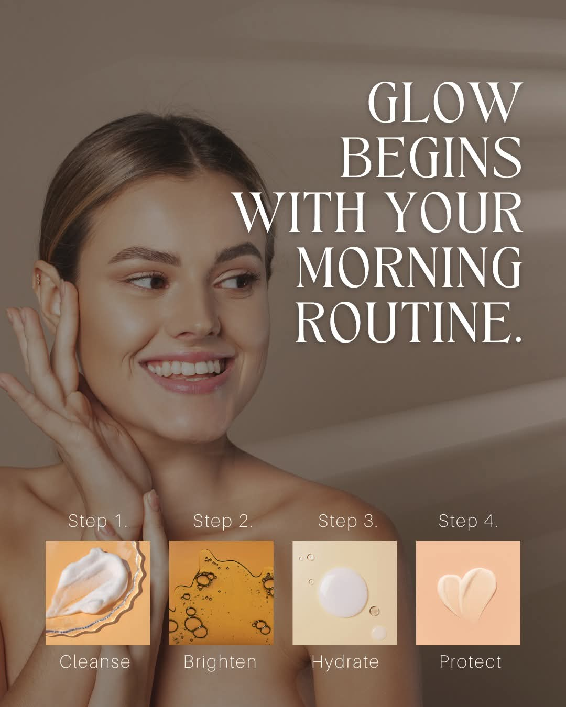
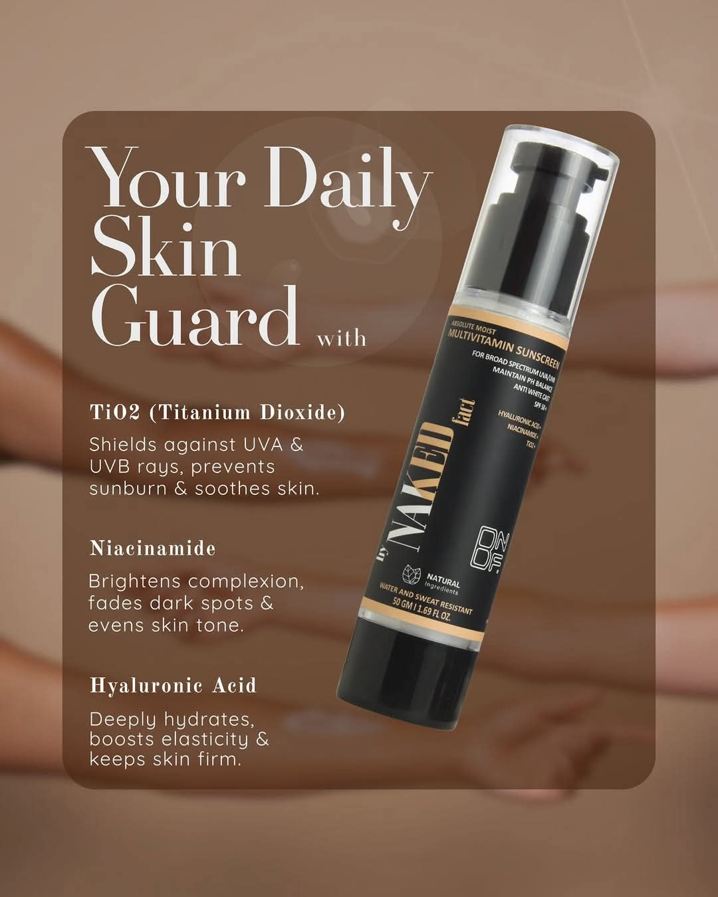
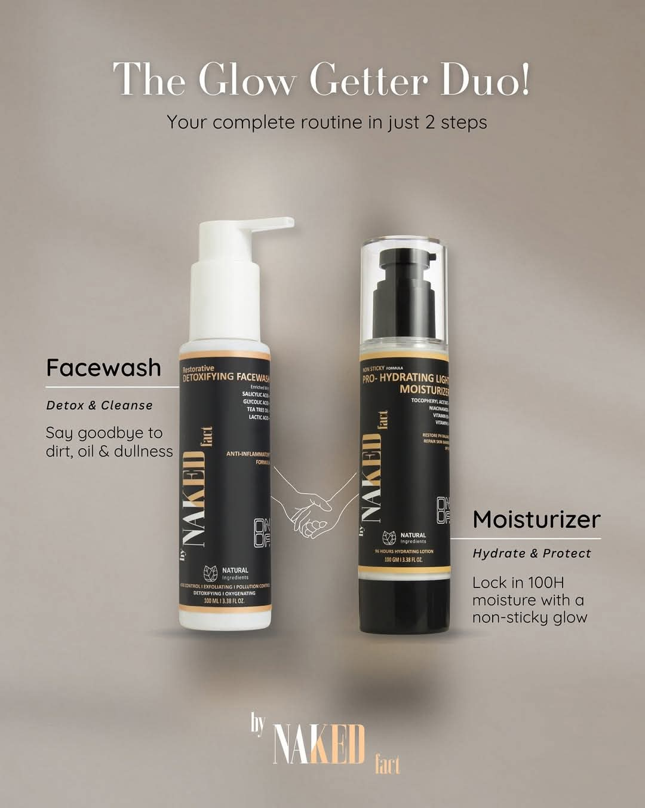
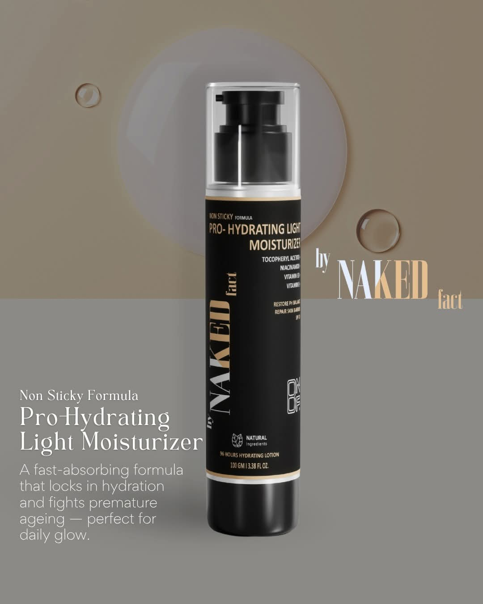
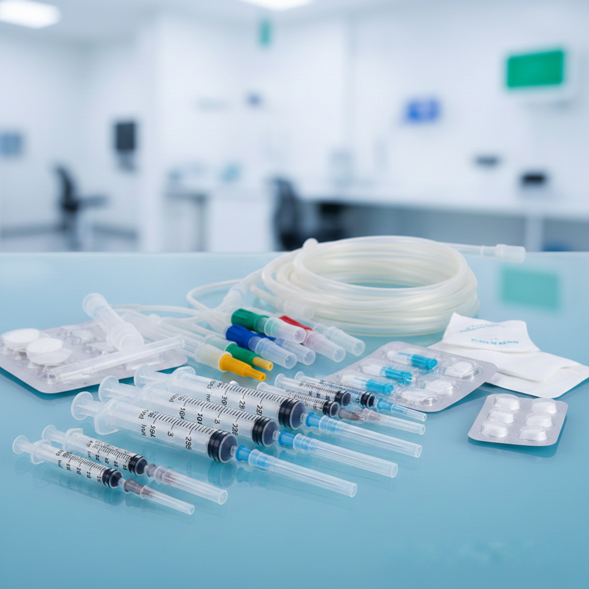
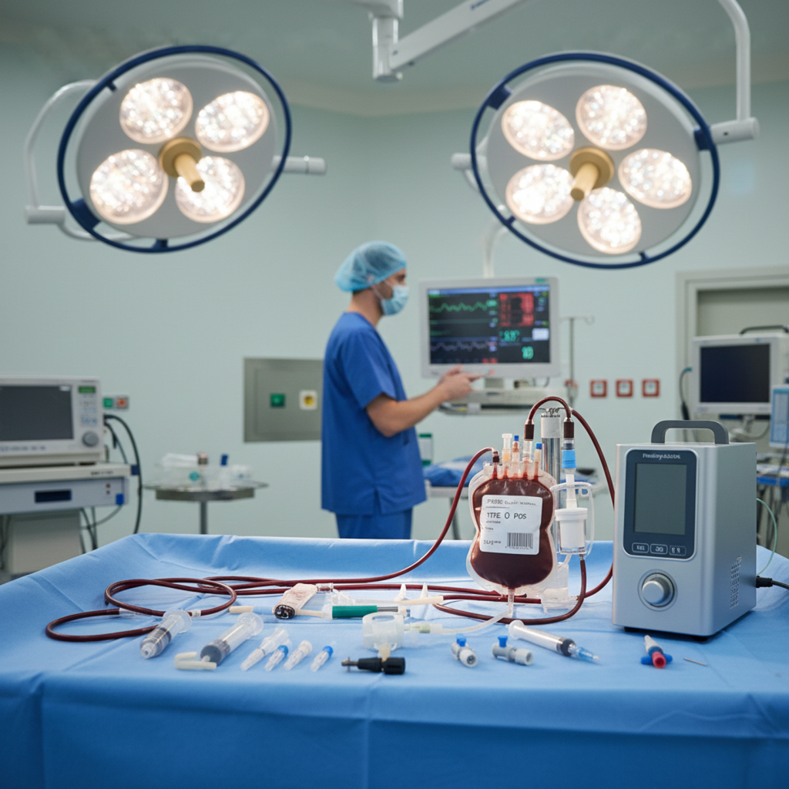
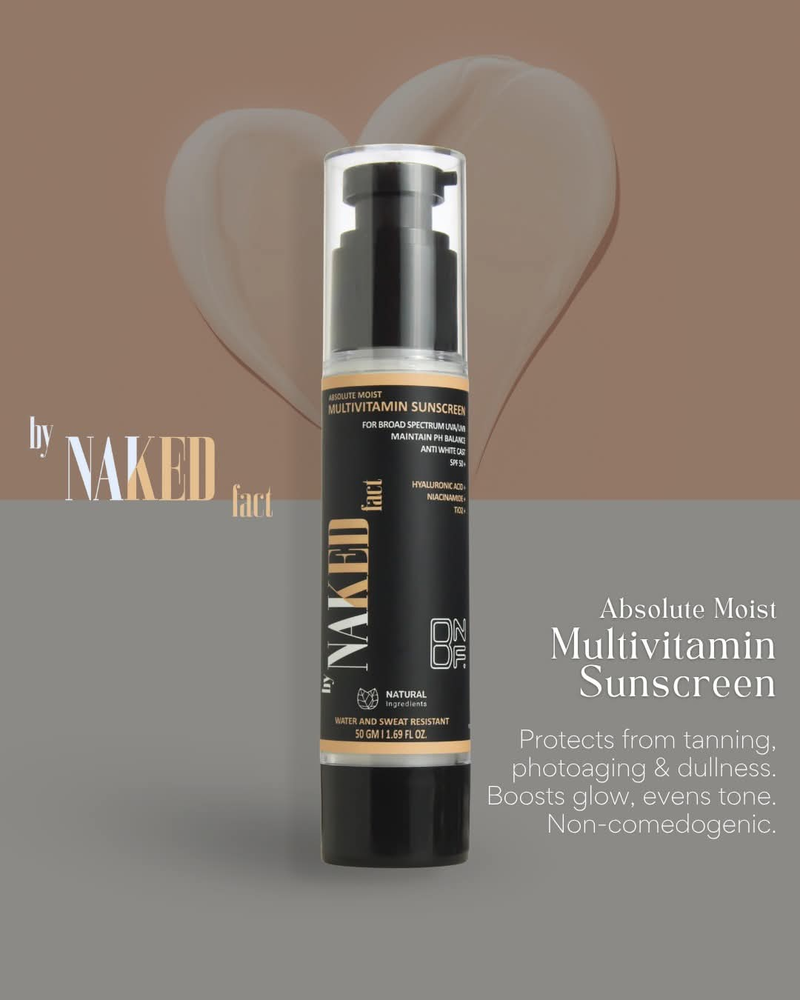
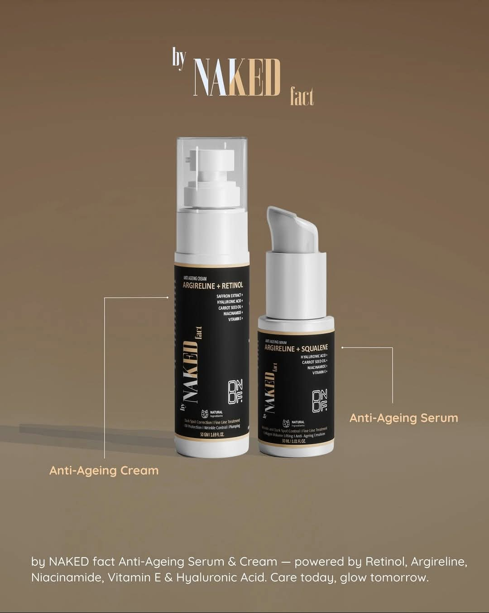
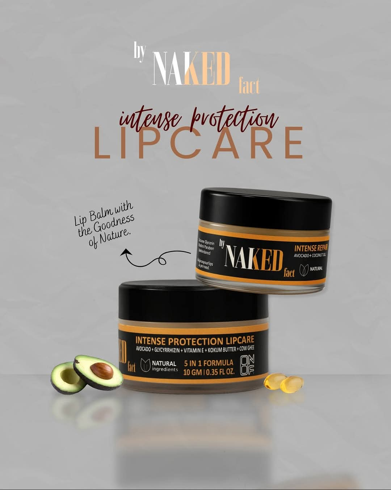

Surgical Products & PPE

Surgical Gloves
Sterile latex and non-latex surgical gloves for medical procedures. Available in various sizes and thicknesses.
- Powder-free options
- Ambidextrous design
- CE and FDA certified

Surgical Masks & N95 Respirators
3-ply surgical masks and N95 respirators for infection control in medical settings.
- High filtration efficiency
- Comfortable nose bridge
- Adjustable ear loops

Complete PPE Kits
Full personal protective equipment sets including gowns, face shields, gloves, and shoe covers.
- Level 1-4 protection
- Fluid-resistant materials
- Single-use disposable
Product Gallery






Medical Consumables

Syringes & Needles
Sterile hypodermic syringes and disposable needles in various sizes for injections and aspirations.
- 1ml to 60ml sizes
- Luer lock and slip tips
- Single-use disposable

IV Cannulas & Sets
Intravenous cannulas, infusion sets, and accessories for fluid administration.
- 14G to 24G sizes
- Safety winged sets
- Transparent chambers

Catheters & Urine Bags
Foley catheters, urine bags, and urology products for patient care.
- Various French sizes
- Latex-free options
- Sterile packaging
Essential Hospital Equipment

Patient Monitor
Advanced vital signs monitoring system used in hospitals, ICU, and emergency rooms.
- Monitors ECG, BP, SpO₂
- Respiratory rate & temperature
- Real-time continuous monitoring

Defibrillator
Life-saving device used to restore normal heart rhythm during cardiac arrest.
- Manual & AED options
- Quick emergency response
- Portable & hospital-grade models

Ventilator
Mechanical breathing support system for critically ill patients in ICU and operation theaters.
- Advanced respiratory support
- Multiple ventilation modes
- Suitable for ICU & emergency use
Product by Naked Fact
Non-sticky Pro-hydrating Light Moisturizer
Lightweight moisturizer in airless bottle with up to 96 hours hydration and SPF20 protection.
- Airless bottle packaging
- Up to 96 hours hydration
- Niacinamide (controls acne & redness)
- Hyaluronic Acid for deep hydration
- Vitamin E (repairs skin barrier)
- Zinc Oxide with SPF20 protection

Absolute Moist Multivitamin Sunscreen (SPF 50)
Broad-spectrum UVA & UVB protection enriched with multivitamins and no white cast formula.
- SPF 50 UVA & UVB protection
- No white cast formula
- Titanium Dioxide + Zinc Oxide
- Hyaluronic Acid hydration
- Niacinamide (acne & redness control)
- Maintains skin pH balance
Insta Care Vitamin C Serum
Stabilized 20% Vitamin C formula for brightening, acne control, and reducing early aging signs.
- 20% Vitamin C (imported from Europe)
- Niacinamide 2%
- Hyaluronic Acid hydration
- Brightens uneven skin tone
- Reduces early aging signs
- Non-watery stabilized formula

Collagen++ Cream
Advanced anti-aging cream with peptides, retinol and natural extracts for wrinkle-free glowing skin.
- Argireline peptide (wrinkle reduction)
- Retinol (reverses early aging signs)
- Saffron Extract (reduces pigmentation)
- Hyaluronic Acid hydration
- Niacinamide (acne control)
- Vitamin E protection
Collagen++ Serum
Peptide-rich serum that promotes collagen production and deeply hydrates the skin.
- Argireline peptide
- Squalane (natural antioxidant)
- Hyaluronic Acid
- Carrot Seed Oil
- Niacinamide
- Vitamin E protection

Intense Protection Lipcare
100% natural lip care formula for deep moisturization, healing and pigmentation control.
- Avocado Oil
- Licorice Root Extract (Glycyrrhizin)
- Vitamin E
- Kokum Butter
- Cow Ghee (reduces dark spots)
- 100% Natural Ingredients

IV INFUSION SET ECONOMY
Standard IV infusion set designed for smooth flow control and safe administration.
- Sharp spike for better penetration
- Superior quality latex tube/flash bulb for self-sealing
- Specially designed roller clamp for better flow control
- Top quality needle
- E.O Sterile

I.V. INFUSION SET WITH DOUBLE NEEDLE
IV infusion set with dual-needle pack for flexible usage.
- Cylindrical chamber
- Regulator for efficient flow control
- Kink resistant PVC transparent tubing
- Bulb latex for extra medication
- Two needles of 21G and 24G inside
- E.O Sterile

IV INFUSION SET AIR VENTED
Air-vented infusion set with hydrophobic filter for safer fluid delivery.
- Built-in air vent & bacteria barrier hydrophobic filter
- Sharp piercing spike for easy insertion in IV container
- Disc type fluid filter to filter particulate matter
- Flash ball type injection port for extra medication
- Sterile and individually packed
- Drip chamber with air vent & bacteria barrier filter
- E.O Sterile

IV INFUSION SET MICRODRIP
Microdrip IV set for controlled and precise administration.
- Built-in air vent & bacteria barrier hydrophobic filter
- Sharp piercing spike for easy insertion in IV container
- Disc type fluid filter to filter particulate matter
- Flash ball type injection port for extra medication
- Sterile and individually packed
- E.O Sterile

BLOOD ADMINISTRATION SET
Blood administration set with filter for safer transfusion.
- 200 micron filter in drip chamber to prevent clots
- Sharp non-vented spike suitable for blood containers
- Flash ball type injection port for extra medication
- 150cm kink resistant tube
- Roller controller for accurate infusion adjustment
- Sterile individually packed
- E.O Sterile

MEASURED VOLUME BURETTE SET
Measured volume set for accurate fluid administration.
- Suitable for infusion of measured quantities of fluid
- Calibrated chamber for precise administration
- Roller controller for better flow control
- Soft and kink resistant tube
- Strong & sharp spike for smooth penetration
- Bulb/Tubing latex for easy flushing
- Floating shut-off valve to prevent air embolism
- Approx. 60 drops/ml (Size: 110 ml & 150 ml)
- Needle size: 23G
- E.O Sterile

I.V. FLOW REGULATOR
Manual IV flow regulator (5–250 ml/hr) for consistent flow control.
- Controls flow rate manually (5 to 250 ml/hr)
- “Y” connector injection site for extra medication
- Constant flow rate
- E.O Sterile, non-toxic & pyrogen free

THREE WAY STOP COCK
Three-way stopcock for controlled infusion and additional access.
- Used between infusion line and vein puncture device
- Transparent polycarbonate body for flow visualization
- Blue/red pegs for arterial/venous identification
- Smooth interior with molded luer lock
- E.T.O Sterile and pyrogen free

THREE WAY STOP COCK WITH EXTENSION LINE
Extension line set to reduce movement at cannulation site.
- Moves administration site away from insertion point
- 3-way stopcock one end, male luer lock other end
- Soft, frosted, kink resistant PVC tubing
- Tube length: 5–250 cm (I.D. 3.0mm, O.D. 4.1mm)
- Optional “Y” injection port (latex/latex free)
- Sterile / Disposable / Individual packed

HIGH PRESSURE MONITORING LINE
For arterial blood pressure monitoring with secure luer lock connections.
- Designed for arterial blood pressure monitoring
- Clear, flexible, leak-proof tubing
- Male & female luer locks for secure connection
- Sterile, non-toxic, pyrogen free
- Tube length: 25–250 cm
- Extension tube: I.D. 1.5mm, O.D. 3.0mm

LOW PRESSURE EXTENSION LINE
Extension line suitable for low pressure fluid administration.
- Convenient for low pressure applications
- Male & female luer locks for secure connection
- Tube length: 25–250 cm
- Extension tube: I.D. 3.0mm, O.D. 4.1mm
- E.O Sterile

INTRAVENOUS CANNULA
IV cannula for infusion of fluids and medicines with secure fixation and flashback chamber.
- For infusion of intravenous fluids and medicines
- Smooth, sharp needle for easy penetration
- Flexible wide wings for proper fixation
- Injection port for extra medication
- Transparent flashback chamber
- PTFE/FEP teflon catheter (color coded by size)
- Sterile / Disposable / Blister packed / Box packing
- E.O Sterile

SCALP VEIN SET
Butterfly scalp vein set for rapid venous access and patient comfort.
- Rapid venous access for long infusion comfort
- Siliconized thin-walled imported needle
- Color coded butterfly wings for easy handling
- Super smooth kink resistant tube
- Sterile / Disposable / Individual blister / Poly pack
- E.O Sterile

Urine Bag – with top outlet cap: 2lt
2L urine bag with efficient outlet and sampling options.
- T-type bottom outlet for single hand operation
- Optional sampling port for safe urine sample collection
- Capacity: 2000ml, Tube length: 100cm
- E.O Sterile

URINE COLLECTION BAG WITH TOP OUTLET
Top-outlet urine collection bag with hooks for easy handling.
- Special hook design for carrying/holding tube upright
- T-type bottom outlet for efficient emptying
- Optional sampling port for safe urine sample collection
- Capacity: 2000ml, Tube length: 100cm
- E.O Sterile

URINE COLLECTION BAG WITH MEASURED VOLUME METER
Accurate hourly urine output measurement with closed-circuit safety.
- Accurate hourly output measurement
- Closed circuit reduces contamination risk
- Meter with overflow facility into urine bag
- Push/Pull bottom outlet for quick emptying
- Capacity: 2000 ml approx.
- E.O Sterile

URINE COLLECTION LEG BAG WITH BOTTOM OUTLET
Leg bag designed for mobility with comfortable strap placement.
- Suitable for day/night use during incontinence
- Freedom of mobility (leg-attached)
- Comfortable strap connectors
- T-type bottom outlet valve
- Capacity: 800 ml approx.
- E.O Sterile

URINE COLLECTION BAG FOR PAEDIATRIC
Short-term urine collection for neonates with hypoallergenic adhesive.
- For short term urine collection of neonates
- Hypoallergenic self-adhesive for better grip
- Prevents irritation & easy removal
- Capacity: 100 ml approx.
- Also available stool urine container
- E.O Sterile
MALE EXTERNAL CATHETER
Pure latex external catheter with self-adhesive strip for secure fixation.
- Pure latex for soft and gentle feel
- Self-adhesive strip for proper fixation
- Easy connection to urine/leg bag
- Individually packed and ready to use
- E.T.O sterile and pyrogen free
- Size: 20/25/30/35/40 mm
- E.O Sterile

FOLEY BALLOON CATHETER
Siliconized catheter designed for short/long term urinary drainage.
- Sterile paper pack (inner box 10 pcs, master carton 1000 pcs)
- Smooth eyes for atraumatic introduction & effective drainage
- Pressure resistant ultra-thin elastic balloon
- Strong drainage funnel with kink resistance
- Hard/soft non-return inflation valve
- Siliconized surface for smooth finish

SILICONE FOLEY BALLOON CATHETER
100% medical grade silicone catheter with accurate drainage eyes and balanced balloon.
- Sterile paper pack (inner box 10 pcs, master carton 1000 pcs)
- 100% medical grade silicone, good biocompatibility
- Smooth tapered rounded tip for easy insertion
- Accurately formed drainage eyes
- Symmetrical balloon expansion for secure retention
- Color coded sleeves for easy size identification

URETHRAL RED RUBBER CATHETER
Short-term urinary drainage catheter made from MR grade latex rubber.
- Natural MR grade PV latex rubber
- For short term urinary drainage
- Round hollow tip with smooth optimal eye
- Integral tapered funnel end
- E.T.O sterile & pyrogen free

TUR SET
“Y” shaped set for endoscopic irrigation during TURP procedures.
- “Y” shaped for trans urethral resection irrigation
- Thumb clamps for quick bottle change
- Flexible latex tubing for easy endoscope connection
- E.T.O sterilized, non-toxic, pyrogen free

GIBBON’S CATHETER
Long-term urine drainage catheter made from soft kink-resistant PVC.
- Designed for long term urine drainage
- Soft non-toxic, non-irritant medical grade PVC
- Compatible with catheter lubrication
- X-ray opaque line through its length
- Sterile / Disposable / Individual packed

NELATON CATHETER
Smooth medical-grade PVC catheter with color-coded connector for size ID.
- Non-toxic, non-irritant medical grade PVC
- Soft rounded closed tip with two lateral eyes
- X-ray opaque line & color coded connector
- Universal funnel connector for urine bag
- E.T.O sterile & pyrogen free

RECTAL CATHETER
For enema introduction and aspiration with soft kink-resistant tubing.
- For enema solution / rectal fluid aspiration
- Soft non-toxic kink-resistant medical grade PVC
- Funnel connector for suction equipment
- Rounded closed tip with two lateral eyes
- Option of radio-opaque line for X-ray visualization
- Sterile / Disposable / Individual packed

URINE POT (TWO IN ONE)
2-in-1 urine pot for male and female with hygienic cover.
- Suitable for male & female (2 in 1)
- Hygienic cover, odorless
- Easy carry handle
- Standing or lying storage
- Disposable & individually packed
- 1000 ml capacity with graduation mark
- Also available Male Urine Pot
- E.O Sterile

BED PAN
Medical-grade bed pan for patient care and hygiene.
- Made from medical grade polypropylene
- Leak proof
- Sterile / Disposable

URINE CULTURE BOTTLE
Leak-proof sterile container for urine sample culture testing.
- For urine sample collection (culture test)
- Medical grade polypropylene
- Absolutely leak proof
- Sterile / Disposable
- Size: 30 ml, 50 ml
- Also available stool urine container
- E.O Sterile

LATEX SURGICAL GLOVES PRE POWDERED
Surgical gloves for invasive procedures with strong barrier protection and comfort.
- Protective covering for hands in invasive surgery
- Special quality natural rubber latex
- Lightly powdered with bio-absorbable corn starch (USP grade)
- Anatomically shaped; micro-rough surface for grip
- Superior barrier protection & tactile sensitivity
- Extensively leached to reduce residues
- Bio-burden and sterility tested

LATEX SURGICAL GLOVES POWDER FREE
Powder-free surgical gloves to reduce powder-related risks.
- Eliminates risks associated with glove powder
- Chlorinated / polymer coated for easy donning
- Manufactured under hygienic conditions
- Sterilized by EO

EXAMINATION GLOVES (LATEX / VINYL / NITRILE)
Comfortable examination gloves options for clinical use.
- Latex gloves (prepowdered / polymer coated / chlorinated)
- Vinyl gloves
- Nitrile gloves
- Non finger fatigue; cool and comfortable
- Size: Small, Medium, Large, Ex-Large
- Sterile / Disposable / Printed box packing

EXAMINATION GLOVES (VARIETY)
Examination gloves in multiple material options for different needs.
- Latex (prepowdered / polymer coated / chlorinated)
- Nitrile gloves
- Vinyl gloves
- Non finger fatigue; cool and comfortable
- Size: Small, Medium, Large, Ex-Large
- Sterile / Disposable / Printed box packing

COMBINE DRESSING ABSORBENT COTTON WOOL
Highly absorbent combine dressing with hydrophobic backing.
- Manufactured using highly absorbent cotton
- Non-woven facing & cotton filler with rayon fibers
- Helps liquid diffuse throughout pad
- Hydrophobic backing prevents strike-through
- Sterilized by E.T.O.

ABSORBENT COTTON WOOL
100% cotton wool for cleaning, swabbing, and wound care.
- Fabricated using 100% cotton
- Free from naps, leaf, shell and seeds
- Bleached for good whiteness & excellent absorbency
- Convenient for cleaning & swabbing wounds
- Packaging as per client requirement
- Size: 50,100,200,400,500 gms
- Also available zigzag cotton

GAMJEE ROLL
Superior cotton yarn roll for swabbing, cleaning, and dressing support.
- Made from superior cotton yarn
- Fast absorption rate & better tending capacity
- Used for swabbing/cleaning & over dressing support

ORTHOPEDIC BANDAGE
Bandage for orthopaedic support and general wound dressing needs.
- Suitable for orthopaedic support and bandaging

ABSORBENT GAUZE SWABS
Soft absorbent gauze swabs for wound cleaning and dressing.
- Ideal for cleaning and dressing wounds

PARAFFIN GAUZE DRESSING
Paraffin gauze dressing for non-adherent wound coverage.
- Non-adherent dressing for wound care

CHLORHEXIDINE GAUZE DRESSING
Antiseptic gauze dressing with chlorhexidine for wound protection.
- Antiseptic support for dressing applications

CANNULA FIXATOR
Elastic adhesive dressing to secure IV cannula in place.
- Semi permeable adhesive dressing (B.P.)
- Secures catheter in challenging IV applications
- “U” shaped design for secure cannula hold
- Sticks well, removes easily
- Sterile / Disposable / Individual packed

COTTON CREPE BANDAGE
Thick fabric crepe bandage with elastic support and comfort.
- Manufactured using thick fabric
- Woven fast edges & controlled uniform pressure
- Helps normal skin breathing; doesn’t hamper flexibility
- Washable to restore elasticity
- Available in various widths; length up to 4 m

ELASTIC ADHESIVE BANDAGE
Heavy-duty strapping bandage for ankle/knee/hand/wrist taping.
- Lightweight strapping bandage for taping
- Moderate to maximum strength support
- Heavy-duty with aggressive adhesion
- Soft cotton with good conformability
- Reliable stickiness; no residue
- Color thread in middle helps overlapping

PLASTER OF PARIS BANDAGE
POP bandage for orthopaedic casting and immobilization.
- Used for rectifying bone damages and dislocation
- Specific length 2.7 meter; multiple sizes available
- High cast strength & optimum setting time
- Extra durable; minimum powder loss

ADHESIVE TAPE
High-grade adhesive tape for clinical and general applications.
- Manufactured using high grade raw material
- Used for diverse commercial and household uses
- Available in various sizes

ROLLER BANDAGE
Odorless roller bandage for wound dressing and absorbency.
- Used in wound dressing
- Odorless and absorbs moisture
- Individually packed (10 rolls per pack)